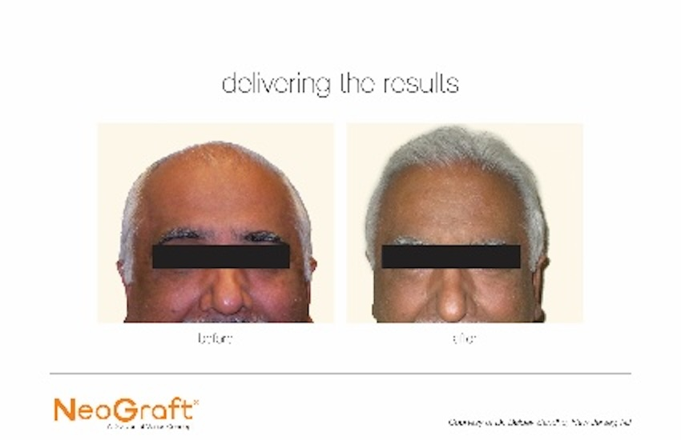
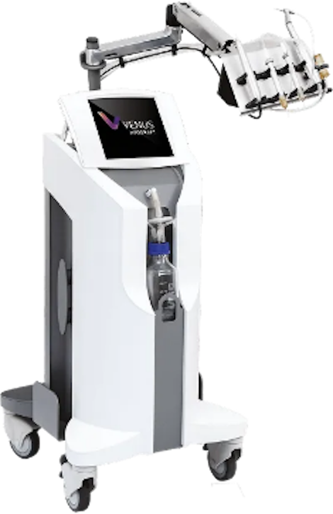

Service 03 — Restauration capillaire
Greffe de cheveux
FUE
Vos propres cheveux, déplacés un follicule à la fois de la zone donneuse vers les zones dégarnies. Aucune cicatrice linéaire, aucun bistouri — et un résultat permanent.

La technique
Follicule
par follicule
La FUE — Follicular Unit Extraction — consiste à prélever individuellement des unités folliculaires dans la zone donneuse, à l'arrière et sur les côtés du crâne, pour les réimplanter dans les zones dégarnies.
Ces cheveux-là ont une particularité : ils sont génétiquement insensibles à l'hormone responsable de la calvitie. Une fois transplantés, ils gardent cette propriété. C'est ce qui rend le résultat permanent.
Contrairement à la technique par bandelette, la FUE ne laisse pas de cicatrice linéaire à l'arrière du crâne. La zone donneuse est rasée, les prélèvements sont microscopiques et se dissimulent une fois les cheveux repoussés — vous pouvez porter les cheveux courts.
- Résultat permanent — les cheveux greffés ne tombent pas
- Aucune cicatrice linéaire — la zone donneuse reste discrète
- Anesthésie locale — vous êtes éveillé, l'intervention n'est pas douloureuse
- Vos propres cheveux — même texture, même couleur, aucun rejet possible
- Retour rapide — la plupart des patients reprennent leurs activités en quelques jours
La technologie
Le NeoGraft, au service
de la main du médecin
Le NeoGraft est un dispositif pneumatique semi-automatisé qui extrait les unités folliculaires par aspiration. Une fraise rotative dégage délicatement le pourtour du follicule, puis une légère succion prélève le greffon et le dépose dans un réservoir — sans qu'il soit saisi à la pince.
Moins de manipulation, c'est moins de traumatisme pour le greffon. Et sur une intervention qui dure plusieurs heures, la machine évite la fatigue de l'opérateur : la qualité du dernier greffon vaut celle du premier.
Une précision qui compte : l'implantation, elle, reste entièrement manuelle. L'angle, la profondeur, la densité et le dessin de la ligne frontale relèvent du jugement du médecin. Aucune machine ne fait ce travail à sa place.

- Extraction par aspirationLes greffons sont recueillis sans être pincés ni écrasés.
- Aucune cicatrice linéaireLa zone donneuse ne garde pas de trait visible, contrairement à la technique par bandelette.
- Intervention plus stableRythme d'extraction constant sur les longues séances.
- Peu invasifAnesthésie locale, récupération rapide, retour aux activités en quelques jours.
Pourquoi chez nous
Le même médecin,
du premier tracé
au dernier suivi
- Tout se fait sur place Consultation, évaluation, intervention, suivi et séance de PRF incluse : une seule adresse, aucun renvoi ailleurs.
- Un seul médecin Celui qui réalise votre greffe est celui qui assure votre suivi. Il connaît votre dossier parce qu'il l'a construit.
- Une expertise médicale réelle Plus de dix ans de formation et de pratique médicale, un doctorat de recherche et une certification en médecine esthétique.
- Un devis établi après évaluation On compte d'abord les greffons nécessaires, on chiffre ensuite. Pas de forfait vendu avant d'avoir regardé votre cuir chevelu.
Tarification
À partir de
7 999 $
Une greffe ne se vend pas au forfait : deux calvities ne demandent jamais le même nombre de greffons. Le prix débute à 7 999 $ — séance de PRF capillaire incluse sans frais — et se précise en consultation, une fois vos besoins évalués.
Le devis
Contactez-nous
pour un appel bref
On regarde votre situation, on vous explique la démarche et on fixe la consultation d'évaluation. C'est à ce moment qu'on compte les greffons nécessaires et qu'on chiffre l'intervention — par écrit, avant toute réservation de date.
Financement
Des méthodes de
financement offertes
L'intervention peut être payée en plusieurs versements. Les modalités et les options disponibles vous sont présentées en consultation, avec le devis, pour que vous décidiez en connaissant le coût réel.
- Prix à partir de 7 999 $, précisé à l'examen
- PRF capillaire inclus sans frais
- Nombre de greffons établi à l'examen
- Devis écrit remis avant toute décision
- Paiement échelonné possible
- Aucun engagement le jour de la consultation
La greffe capillaire est un traitement électif, non couvert par la RAMQ ni par les régimes d'assurance privés. Le tarif de départ de 7 999 $ correspond à l'intervention la plus simple ; le prix final est confirmé par écrit après la consultation d'évaluation, avant toute réservation de date. Taxes applicables le cas échéant.
En complément
La greffe règle
le passé. Le PRF
protège la suite.
Compris dans la greffePRF capillaire gratuitaucun frais additionnel
Une greffe redonne des cheveux là où il n'y en a plus. Elle n'empêche pas les cheveux natifs voisins de continuer à s'affiner — c'est la limite que peu de cliniques expliquent clairement.
C'est pourquoi le PRF est associé à la greffe : il soutient la prise des greffons et stimule les follicules encore actifs autour de la zone traitée. Une séance est comprise dans votre greffe, sans frais additionnels ; le calendrier est établi par rapport à la date de votre intervention.

Qui vous opère
Dr Juan Camilo
Gomez-Izquierdo
MD, Ph. D. — CCMF, greffe de cheveux FUE
C'est lui qui réalise nos greffes de cheveux — et c'est lui, aussi, qui assure votre suivi. Le même médecin, du premier tracé au dernier contrôle.
Son parcours : plus de dix ans de formation et de pratique médicale, un doctorat en chirurgie expérimentale de l'Université McGill, et une certification du Canadian Board of Aesthetic Medicine. Il a également complété une formation esthétique avancée par l'entremise du Collège des médecins du Québec.
Un chercheur devenu praticien, qui parle quatre langues et qui a l'habitude de justifier ce qu'il propose — parce que c'est ce qu'on lui a appris à faire.
Questions fréquentes
La greffe de cheveux FUE,
sans marketing
Impossible à dire sans vous examiner. Cela dépend de la surface à couvrir, de la densité de votre zone donneuse, de l'épaisseur de vos cheveux et du stade de votre calvitie. La greffe débute à 7 999 $ et comprend une séance de PRF capillaire sans frais ; le nombre de greffons et le prix final sont établis à la consultation, propres à chaque patient — et des méthodes de financement sont offertes.
L'intervention se déroule sous anesthésie locale et n'est pas douloureuse. Vous êtes éveillé et confortable. Une médication peut être prescrite après l'intervention si l'inconfort le justifie.
Dans les deux premières semaines, oui : l'enflure et les croûtes sont visibles. Après, c'est le dessin de la ligne frontale qui détermine tout. Une ligne trop basse, trop droite ou trop dense trahit une greffe ; une ligne respectant votre âge et votre morphologie ne se voit pas. C'est le travail du médecin, et il se valide avec vous avant l'intervention.
Ils vont tomber une fois, dans les premières semaines : c'est une chute transitoire normale, le follicule reste en place. Ensuite, ils repoussent et ne retombent plus, parce que ces follicules sont génétiquement insensibles à l'hormone responsable de la calvitie. La greffe est permanente.
Dans la plupart des cas, les patients reprennent leurs activités habituelles en quelques jours. L'enflure et les croûtes peuvent persister une à deux semaines — c'est surtout un enjeu d'apparence, pas de capacité. Les efforts physiques intenses sont à éviter quelques semaines.
Entre neuf et douze mois après l'opération. Les cheveux greffés repoussent progressivement : à quatre mois vous verrez un début, à six mois une différence nette, et le résultat se stabilise vers un an.
Les deux cas existent. Greffer trop tôt, alors que la calvitie progresse encore rapidement, peut mener à un résultat déséquilibré quelques années plus tard. À l'inverse, une zone donneuse trop appauvrie limite ce qu'il est possible de faire. Le rôle de la consultation est justement de déterminer si c'est le bon moment — et de vous le dire si ce ne l'est pas.
Un suivi médical est recommandé environ tous les six mois pour vérifier la santé capillaire et préserver les greffons. On recommande aussi des produits capillaires à forte concentration d'agents actifs, et le PRF pour stimuler la repousse des cheveux natifs restants.
Cette page est informative et ne constitue pas un avis médical. La greffe capillaire est une intervention médicale comportant des risques. Les résultats varient d'une personne à l'autre et aucun résultat ne peut être garanti. Une évaluation préalable est obligatoire.
Prochaine étape
Combien de greffons,
vraiment ?
La seule façon de le savoir, c'est de faire évaluer votre cuir chevelu. Vous repartez avec un nombre, un prix et un échéancier — et vous décidez ensuite.